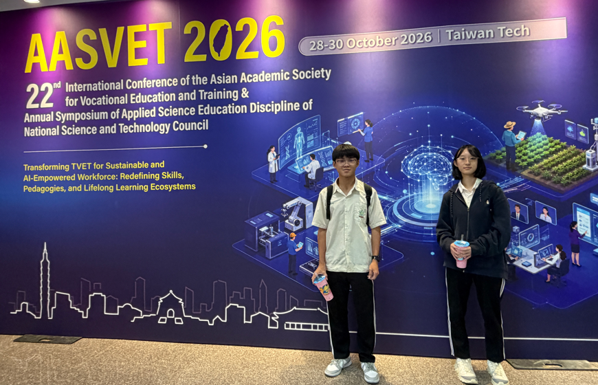

★ 共計獲獎 19 篇
★ 共計獲獎 19 篇
📝 全國高中閱讀心得寫作比賽（第1151008梯次）
勇奪 優等 4 篇 ✕ 甲等 15 篇 共 19 篇！
🏆 優等 4 篇
表現優異
103邱繼威、104李宣蓉、105簡瑄佑、107許凱晴
🎖️ 甲等 15 篇
101李天倫、103史芸菲、104何湘琪、104陳捷筑、104楊翔崴、105藍宇瑄、105廖子文、106林羽葳、106何秉諺、106林宇洋、107吳佳軒、107李心恬、107張馨尹、109朱恩儀、109陳昱晴
💐
感謝指導老師：龐靜儀、賴于靜、李慧娟、張鳳翔 老師
🤖 AI科技研習 ✕ 師生校外論壇與展會
資訊組 ✕ 科技中心
國際學術研討會AASVET 2026 國際年會
學生代表出席臺科大技職科技論壇
AI 教學實踐力
解鎖育見 AI 成果分享會
錦和教師團隊共學 AI 教學實踐設計
 世貿科技大展
世貿科技大展
臺灣教育科技展參訪
師生赴世貿體驗最新智慧教育科技
⚠️ 重要宣導：Gemini AI Pro 帳號使用提醒
本校因 9、10 月未使用已遭回收 10 組帳號！請獲配教師每月至少登入使用一次，珍惜寶貴資源！